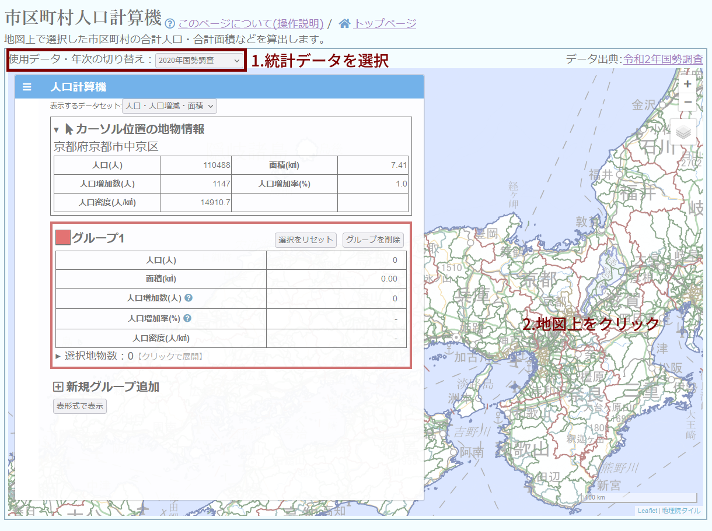
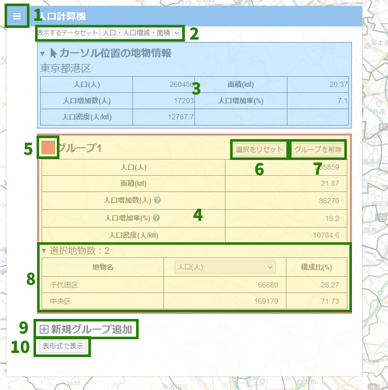
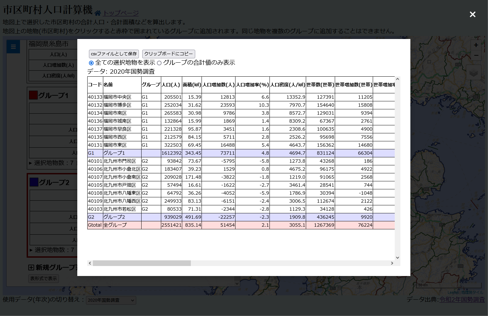

人口計算機について
日本の市区町村の人口・面積など様々なデータを、複数の市区町村間で合計して表示できるツールです。
地図上の市区町村をクリックすると、左の計算機パネルにクリックした市区町村のデータの合計が表示されます。
操作説明

１．画面上部の「使用データ・年次の切り替え」から、表示したい統計を選ぶ。
２．地図上から市区町村を選び、クリックする。人口計算機パネルの「グループ」にその市区町村のデータが追加される。
選択した市区町村をもう一度クリックすると選択が解除されます。
グループが複数ある場合、クリックした市区町村は赤枠で表示されているグループに追加されます。
グループを切り替えるには、人口計算機パネルの該当グループの枠内をクリックしてください。
クリックした市区町村が既に別のグループに存在する場合、元のグループからはその市区町村が削除され、新しいグループに追加されます。
パネル各部の機能

１．パネル展開・格納ボタン
２．データカテゴリ選択
パネル上に表示するデータの種類を選ぶ。
(【円グラフ表示】の表記があるカテゴリを選択すると、データテーブルの代わりに円グラフが表示されます。)
３．カーソル位置の地物情報
地図上でカーソルの位置にある市区町村のデータが表示される。
４．グループ
グループごとの集計データが表示される。
データ名にマークがついている場合、マークにカーソルを乗せるとデータの説明が表示される。
５．グループ表示色
地図上でグループに追加された市区町村に着色する色。クリックで色を変更できる。
６．グループメニューボタン
グループメニューを展開する。
選択をリセット：そのグループで選択した全ての市区町村を削除する。
グループを削除：そのグループを削除する。
色の変更：グループの選択色を変更する。
名前の変更：グループの名称を変更する。
７．選択地物数表示・個別地物テーブル
選択した市区町村の数が表示される。
クリックすると選択した各市区町村のデータを表示するテーブルが展開される。
地物名：選択した市区町村等の名称。
指標セレクトボックス：セレクトボックスから選択した指標のデータが表示される。
構成比：グループの合計値に対して、その地物の値が占める割合。
(構成比は絶対数かつ正の値をとる指標のみ表示されます。比率や割合を示す指標(人口密度など)や負の値を持ち得る指標(人口増加数など)を選択すると構成比は表示されません。)
８．新規グループ追加
クリックすると新しいグループを追加する。
９．表形式で表示
全グループ・選択地物のデータを表示するテーブルを表示する。
統計データの切り替え
画面上部の「統計データ・年次の切り替え」から、表示する統計データを切り替えられます。
切り替える際に表示されるダイアログボックスで「選択地物を保持して変更」を選ぶと、選択状態を保持したまま他のデータに切り替えられます。
「選択地物をリセットして変更」を選ぶと、選択地物・追加したグループはすべて削除されます。
選択地物の保持は、自治体コードが同一のものを同じ地物とみなして行っています。変更したデータセットの中に選択済みの地物とコードが同じ地物が存在しない場合、その地物は選択から破棄されます。
事実上同一の市区町村であってもコードが変更されている場合は選択が維持されませんのでご注意ください。(たとえば、町が市に変わった場合、コードは変更されます。)
グループ間分析
一部のデータセットでは、グループ間分析のテーブルが表示されます。
AとBに任意のグループを選択することで、二つのグループ間の移動人口などのデータを計算することができます。
データ・集計について
四捨五入による誤差や、帰属未定地の扱い等によって、都道府県内全地域の合計値と各調査で公表されている都道府県の値は異なる場合があります。
データに秘匿処理がなされている場合、テーブル上には「X」が表示されます。
秘匿値はグループの合計値には含まれません。
【集計の地理的単位について】
原則として市区町村単位のデータを扱っています。
・2020年国勢調査(旧市町村単位): 国勢調査報告に記載されている旧市区町村(2000年時点の市区町村領域)単位のデータを収録しています。ただし2000年以降に政令指定都市となった地域に関しては、行政区単位で再集計しました。
・2021年衆院選: 原則市区町村単位とし、ひとつの市区町村が複数の小選挙区に分かれる場合には小選挙区ごとに地域を分割しました。ただし一部の分割地域は単独での開票結果が公表されていないため、小選挙区が同一である別の市区町村と統合しています。
【2021年衆院選データの按分処理について】
宮城県仙台市太白区および神奈川県横浜市都筑区は、比例代表制の投開票結果が行政区全体の票数のみの公表となっており、小選挙区単位の票数が公表されていません。
そのため、これらの地域における比例代表制の票数は、「小選挙区制における投票者数」の比率に応じて行政区全体の票数を按分した数を掲載しています。
按分処理を行ったデータは、テーブル上で青色で表記されます。
データの表形式表示

人口計算機パネルの最下部にある「表形式で表示」ボタンをクリックすると、選択した地物の全データが表形式で表示されます。
表は「全ての選択地物を表示」、「グループの合計値のみ表示」のモードがあります。
グループ間分析が有効なデータセットでは、「グループ間クロス表」の表示ができます。表の行が移動元のグループ、表の列が移動先のグループを示し、テーブル内部には移動人口が表示されます。
「csvファイルとして保存」ボタンをクリックすると、表をcsv形式でダウンロードできます。
「クリップボードにコピー」ボタンをクリックすると、表をコピーできます。ダウンロード・コピーした表は表計算ソフト等に貼り付けることができます。
※現在、一部環境において「クリップボードにコピーしました」と表示されても正常にコピーができていない不具合を確認しています。
収録データの一覧
免責等
このツールは、はにしなが個人で作成しているものです。
内容の正確性については保証できません。
このツールを使用したことによって生じた不利益に関して、当方は一切の責任を負いかねます。
はにしな